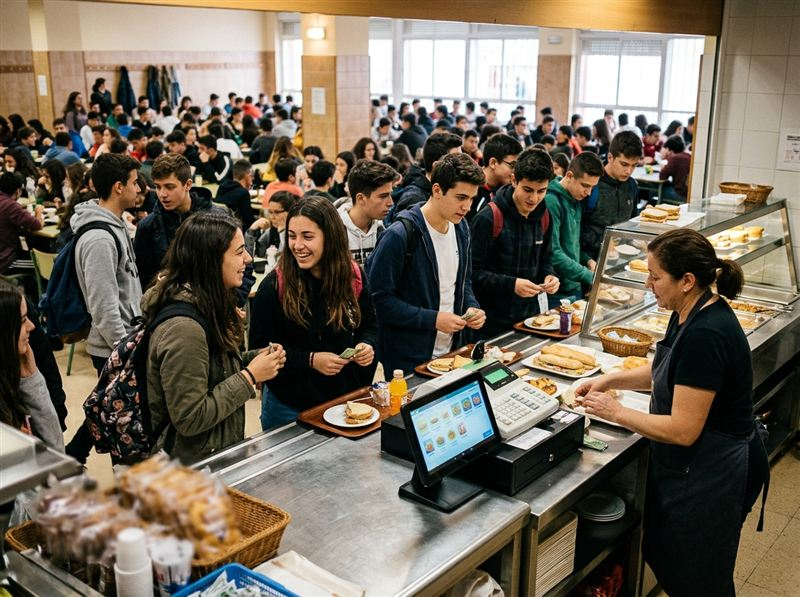

Instituto
Un bucle infinito en una aplicación hecha por el alumnado para avisar de cuándo salen los bocadillos de tortilla lanzó 30.000 peticiones por minuto contra el servidor del menú.

Cola en la barra de la cafetería a la hora del recreo. Foto: Redacción
Desde el lunes, la cafetería publica cada mañana su menú en un fichero JSON para que cualquiera pueda consultarlo desde el móvil. La idea duró poco: a las 10:40 del primer día el servidor dejó de responder.
El culpable fue una aplicación casera que preguntaba sin descanso si ya había bocadillos de tortilla. Su autor, un alumno de 1º de SMR que prefiere no dar su nombre, reconoce que el programa repetía la pregunta mientras bocadillos < 1, pero nunca esperaba ni un segundo entre una pregunta y la siguiente.
mientras (bocadillos < 1) preguntar_al_servidor()
Nos llamaron de secretaría porque tampoco funcionaba el aula virtual. Pensábamos que era un ataque informático y resultó ser un bocadillo.
Carmen Ruiz, responsable de la cafetería
El departamento de Informática ha limitado el número de consultas por minuto y la cafetería mantiene el menú en JSON. La oferta de esta semana es el combo Bocadillo & Zumo por 3,50 €.
Por Daniel Ortega · 4 min de lectura